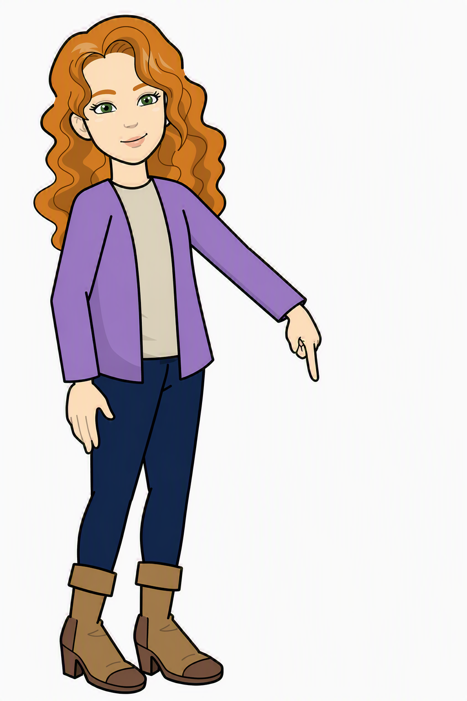

Sharing Progress with Carers
Sharing Progress with Carers

Return to this Browser Tab when you have finished watching the video.
Then answer the question below.
When you are ready, click "Next Page".
Then answer the question below.
When you are ready, click "Next Page".
Find Arya Stark in the Children's Search page, and create a progress action, “CHARMS tutorial practice for staff”.
Share the progress action with her current carers only, excluding all associated carers.
Note that if there is no carer in the selection screen to choose from, it will be because Arya's carer's CHARMS access
has been revoked,
due to them not having logged on for over 6 months.
If this is the case, speak to a Super-User who will reinstate the carer's CHARMS account.
Now click below to go to the next page.